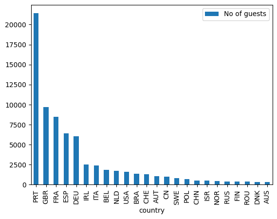
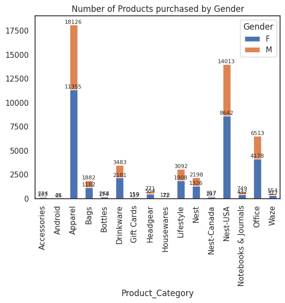
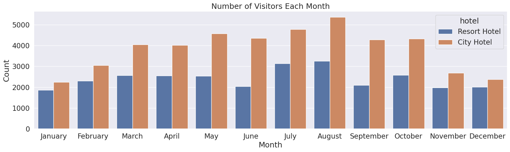
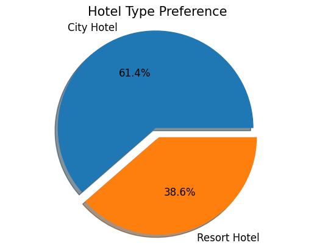
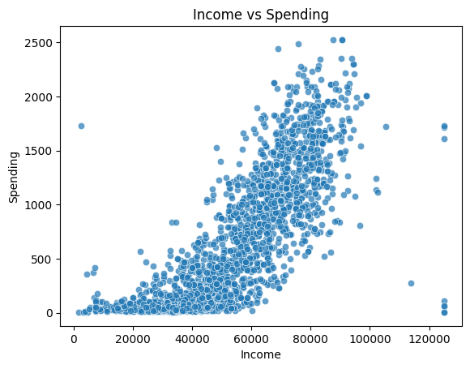
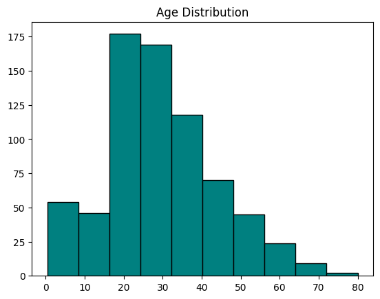
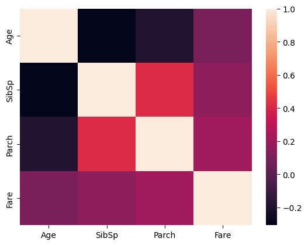
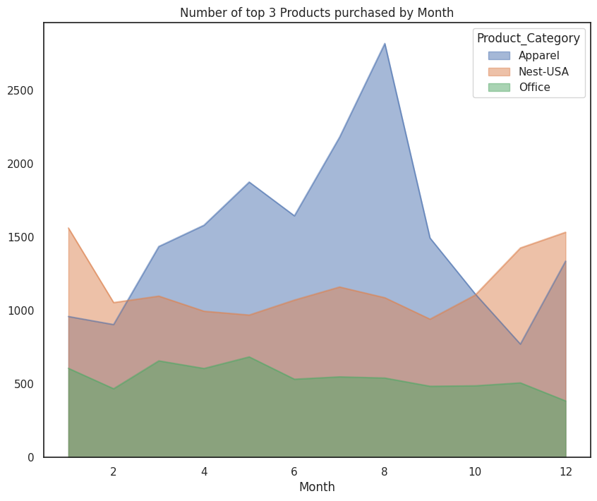

DIFFERENT DATA VISUALIZATIONS WITH EXAMPLES
Human brain processes faster visual information than text or numbers. That is why graphical representation of data has been so popular the last decates. In this article we are going to sum up and give some example of the most common graphs and when we can use them.
UNDERSTANDING YOUR DATA
When you have a data set and want to analyze it in order to uncover patterns and trends or tell a story, the first thing that you have to do is to understand and clean your data. That means that you have to check first if your data are reliable. Meaning, are there any mispellings, or duplicates or missing values? Are the types of different variables correct? When you check and correct everything that doesn’t fit to your data, you are ready to go to the next step and visualize them. But before that, make sure that you know how each type is used for. In this post we are going to explain some types of data visualizations and when is proper to use them.
TYPES OF DATA VISUALIZATIONS
The most common types of data visualizations are:
BAR CHARTS :

(You can find the analysis that the above chart was used here)
We can use it when we want to compare categories or groups. When you have discrete values and you want to see the differences between them, bar charts is a clean and easy way to do it.
Examples :
- Which item was sold most this year from our e-shop.
- How many pageviews we had from January to July.
STACKED BAR CHARTS : COMPARE WITH TWO RELATIVE VARIABLES

(You can find the analysis that the above chart was used here)
We can use a stacked bar when we want to look at numeric values not for one categorical variable but two. Therefore, if we care about the relative decomposition of each primary bar based on the levels of a secondary categorical variable.
Examples :
- Visualize the monthly savings and spendings for every month.
- See which gender bought more items from a product this year.
GROUPED BAR CHARTS :

(You can find the analysis that the above chart was used here)
We can use a grouped bar chart when we want to observe two or more data sets displayed side-by-side and grouped together under categories on the same axis.
Examples :
- You want to compare the income of your company for the first semester of the last 3 years.
- Compare the salary of a job for different companies depending on the experience of the position.
LINE CHARTS : SEE TRENDS

(You can find the analysis that the above chart was used here)
We can use it to observe data over time. They are perfect for continuous data and for showing how a variable can change at equal intervals.
Examples :
- You want to see the number of sales of a product over time (days, months, years). Or to compare more than one product over time.
- See how many visitors came on an event, the first eight hours of an exhibition and which hour of the day had the least attendance.
PIE CHARTS : SHOWCASING PROPORTIONS

(You can find the analysis that the above chart was used here)
We can use it when we want to see how parts make up a whole. They are a good way when you want to illustrate propotional data and the total of your segments is 100%.
Examples :
- How much from our annual salary was spent in different categories (groceries, clothes, entertainment etc.)
- How many customers prefer e-shop, app or physical shop to buy our product.
SCATTER PLOTS : UNCOVERING RELATIONSHIPS

(You can find the analysis that the above chart was used here)
We can use it when we want to observe if there is a relationship or correlation between two variables. They are perfect for visualizing patterns, concentrations and outliers.
Examples :
- We want to see if height and age of a child are correlated.
- See the amount of production of a product against the respective price of it.
HISTOGRAMS : UNDERSTANDING DISTRIBUTIONS

(You can find the analysis that the above chart was used here)
We can use it when we want to understand the distribution of our data. They are excellent if we want to see the frrequency of data points within certain ranges.
Examples :
- We want to observe few stocks and the frequency of the prices.
- We have the waiting time of the customer at the cash counter of a bank branch during peak hours.
HEAT MAPS : SHOWING VARIATIONS IN DENSITY

(You can find the analysis that the above chart was used here)
We can use it when we have complex data sets and want to show variations in density or intensity.
Examples :
- Visualize organizational structure, revenue breakdowns, market segmentations, and other factors over a certain period of time.
- Compare the sales numbers of different brands or models over a certain period.
TREEMAPS : USE FOR HIERARCHICAL DATA
A treemap is a chart type used to display hierarchical data through rectangles that decrease their size as the value decreases.
We can use treemaps when we have hierarchical data or we do not need a precise comparison betweeen categories.
Examples :
- How many visitors went to different museums in a city.
- In a pet shop how many customers bought different types of pets.
BUBBLE CHARTS : FOR QUICK COMPARIZON
A bubble chart is a chart type that represents variables using bubble sizes, colors and positions.
We can use bublle charts when we want to compare data quickly and easily. They are particularly useful when comparing data points with multiple data sets, such as demographic data with age, gender and occupation as variables.
Although bubble charts are great for comparing our data more than 20 bubbles on the chart can be confusing and overwhelming.
Examples :
- Compare a few movies and how many 5-star ratings they had in a critic page.
- How many followers a shop has in different social media platforms.
BOX PLOT : VISUALIZING DISTRIBUTION OF DATA

(You can find the analysis that the above chart was used here)
Boxplots are drawn as a box with a vertical line down the middle, and has horizontal lines attached to each side. A box plot is a standardized way of displaying the distribution of a data set based on the five-number summary of data points: the minimun, first quartile (Q1), median, third quartile (Q3) and maximum. They can also tell you if there are outliers, if the data are symmetrical, how tightly your data is grouped and how your data is skewed.
AREA CHART : SHOWNING TRENDS OVER TIME

(You can find the analysis that the above chart was used here)
Area chart is a visual representation of data that utilizes both lines and filled areas to convey information. This type of chart is particulary effective in showcasing data trends and variations over a specified period or accross different categories.
We can use area charts to show differing trends over time. It is best to use when there is data expressed as total, there are time periods to compare, you want to communicate an overall trend, not individual values or there are multiple data series with part-to-whole relationships, or cummulative series of values.
Examples :
- When we want to observe the number of sales for different payment methods per month.
- Observe how population grows over time in different countries.
FUNNEL CHART : TRACKING THE FLOW OF VISITORS
The funnel chart takes its name from its shape, which starts from a broad head and ends in a narrow neck. They are most often used in business or sales context, where we need to track how a starting set of visitors or users drop out of a process or flow.
It is best to use it when we have at least 3 stages. Only use it when you are sure that the number of users, customers, or any other data type in the first step will be larger than the data values in the final step. Otherwise a simple pie chart or a single stacked bar will do the work.
Examples :
- How many emails we sent to our customers, how many saw them, how many clicked on the link and how many stayed more than a minute in our page.
- How many applicants applied for a job, how many selected for an interview, how many got to the second interview and how many where in the final selection.